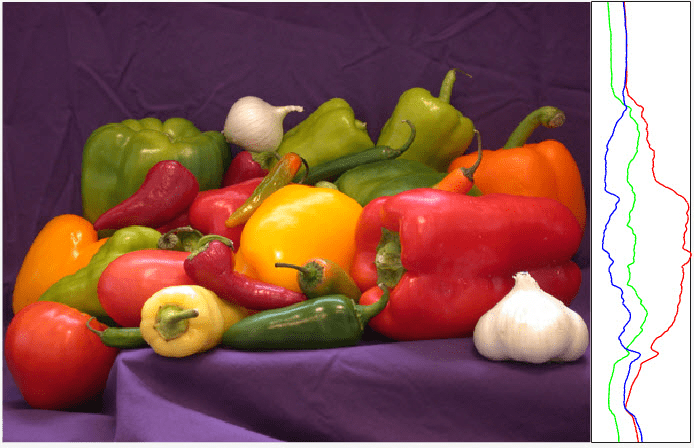

tightPosition
Description
pos = tightPosition(ax)ax. The result is a four-element vector of the form [left
bottom width height] that describes the position and size of the rectangle in
the units specified in the Units property of the axes object. By default,
the units are normalized values between 0 and
1.
pos = tightPosition(ax,Name=Value)tightPosition(ax,IncludeLabels=true) returns the
position of the rectangle that surrounds the title, subtitle, tick labels, and axis labels
of ax.
Examples
Plot a spiral. Use the axis function to adjust the plot box so that the x- and y-scales are equal and so that the plot box surrounds the spiral tightly.
t = linspace(0,10,100); ax = axes; plot(t.*sin(t),t.*cos(t)) axis equal tight

Get the position vector, and use that vector to draw a red rectangle that circumscribes the plotting area. For Cartesian axes, the plotting area is the area inside the plot box. This rectangle is coincident with the plot box.
pos = tightPosition(ax); annotation("rectangle",pos,Color="red",LineWidth=2)

Get the position vector that includes the axis tick labels, and use that vector to draw a blue rectangle around the plot box and the tick labels.
poslab = tightPosition(ax,IncludeLabels=true); annotation("rectangle",poslab,Color="blue",LineWidth=2)

Load the mri data set and display the MRI image stored in the D variable. Use the axis function to preserve the aspect ratio of the image.
figure ax = axes; load mri image(D(:,:,10)) axis image

Get the position vector, and use that vector to draw a red rectangle that circumscribes the plotting (image) area. For Cartesian axes, the plotting area is the area inside the plot box. This rectangle is coincident with the plot box.
pos = tightPosition(ax); annotation("rectangle",pos,Color="red",LineWidth=2)

Get the position vector that includes the axis tick labels, and use that vector to draw a blue rectangle around the plot box and the tick labels.
poslab = tightPosition(ax,IncludeLabels=true); annotation("rectangle",poslab,Color="blue",LineWidth=2)

Define a function positionAx2 that takes two sets of axes as
arguments. The function sets the position of the second set of axes so that it is
directly to the right of the first set. The function also sets the width of the second
set of axes as a constant 100 pixels.
function positionAx2(ax,ax2) tp = tightPosition(ax,Units="Pixels"); ax2.Position(1) = tp(1) + tp(3); ax2.Position(3) = 100; ax2.Position([2 4]) = tp([2 4]); end
Display an image. To the right of the image, plot the sum of the RGB values of each
corresponding row of pixels of the image. Set the SizeChangedFcn
property of the figure to a function handle for positionAx2. When
you resize the figure, the line plot maintains its position relative to the image and
its 100-pixel width.
f = figure; ax = axes(f); im = imread("peppers.png"); image(ax,im) axis(ax,"image","off") ax2 = axes(f,Units="Pixels"); hold(ax2,"on") plot(ax2,sum(im(:,:,1),2),"r",LineWidth=1) plot(ax2,sum(im(:,:,2),2),"g",LineWidth=1) plot(ax2,sum(im(:,:,3),2),"b",LineWidth=1) view(ax2,[90 90]) box(ax2,"on") xticks(ax2,[]) yticks(ax2,[]) xlim(ax2,"tight") f.SizeChangedFcn = @(~,~)positionAx2(ax,ax2); positionAx2(ax,ax2)
